DLX-MIPS
25 de Julio, 2023
Documento Universidad Nacional de Córdoba
Facultad de Ciencias Exactas Físicas y Naturales
TÍTULO: Proyecto MIPS.
SUMARIO: Descripción de instalación, configuración y uso del procesador MIPS.
FLUJO DE APROBACIÓN
ESTADO | ROL RESPONSABLE | Acción ejecutada por: | FECHA COMPLETITUD |
Creado | Equipo de Desarrollo | Julieta Abigail Prieto | 20/07/2023 |
Creado | Equipo de Desarrollo | Mateo Merino | 20/07/2023 |
Revisado | Profesor del práctico | Martin Pereyra | 27/07/2023 |
Aprobado | Profesor del práctico | Martin Pereyra | 27/07/2023 |
HISTORIAL DE CAMBIOS
VERSIÓN | FECHA | SECTOR | COMENTARIOS |
1.0 | 24/07/2023 | Todas | Primer versión del documento |
1.1 | 25/07/2023 | Timer y debugger | Vaciado de pipeline automático por hardware y se agrega requerimientos de timer. |
TABLA DE CONTENIDOS
Propósito 2
Términos y Definiciones 2
ALU 2
PIPELINE 2
Riesgos 3
Riesgo Estructural 3
Riesgo de Control 3
Riesgo de Datos 3
DLX 3
MIPS 4
Métricas de Timming: 4
WNS (Worst Negative Slack): 4
TNS (Total Negative Slack): 4
Acrónimos y Abreviaturas 5
Descripción del Procesador 6
Propósito 6
Arquitectura del Procesador 6
Etapas 6
Set de Instrucciones 6
Modo de Operación 7
Etapas y módulos del pipeline 8
Debugger 9
UART 9
Etapa IF 10
Inputs: 11
Outputs: 11
Etapa ID 11
Inputs: 12
Outputs: 13
Unidad de Control 14
Inputs: 14
Outputs: Señales de Control 14
Detector de Riesgos 16
Inputs 16
Outputs 17
Etapa EX 17
Inputs: 18
Outputs: 19
Etapa MEM 21
Inputs 22
Outputs 22
Etapa Write Back 22
Inputs: 23
outputs: 23
TIMER: 23
Requerimientos 23
Ejecución Nominal 24
BIBLIOGRAFÍA 25
Información del documento
Propósito
El presente informe consta de una descripción de lo que fue la elaboración del trabajo final de la materia Arquitectura de Computadoras; la implementación del procesador MIPS en lenguaje de descripción de hardware Verilog, siendo éste puesto a funcionar en la placa FPGA Basys 3.
Términos y Definiciones
ALU
Es un circuito digital que realiza operaciones aritméticas (suma, resta) y operaciones lógicas (SI, Y, O, NO) entre los valores de los argumentos (uno o dos).
PIPELINE
La segmentación de cauce, también denominada pipeline, es una técnica empleada en el diseño de procesadores, basada en la división de la ejecución de las instrucciones en etapas, consiguiendo así que una instrucción empiece a ejecutarse antes de que hayan terminado las anteriores y, por tanto, que haya varias instrucciones procesando simultáneamente.
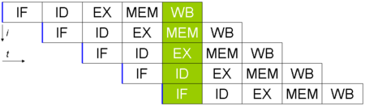
Riesgos
Riesgo Estructural
Sucede cuando dos instrucciones acceden al mismo recurso al mismo tiempo.
Riesgo de Control
Sucede cuando se intenta tomar una decisión sobre una condición no evaluada. Por ejemplo las instrucciones BRANCH realizan un salto condicional, por lo que no se puede predecir en un principio cuál será la próxima instrucción sin antes ser evaluada la condición.
Riesgo de Datos
Sucede cuando se intenta utilizar un registro antes de que este esté preparado. Este riesgo se puede sub clasificar en los siguientes.
- RAW (Read After Write): una instrucción trata de leer un registro antes de que lo escriba una instrucción anterior.
- WAR (Write After Read): una instrucción trata de escribir su resultado en un destino (sobreescribiendo su valor previo) antes de que una instrucción anterior haya leído el valor anterior de éste.
- WAW (Write After Write): una instrucción trata de escribir antes que otra instrucción anterior escriba en el mismo destino.
DLX
El DLX es básicamente un MIPS revisado y simplificado con una arquitectura simple de carga/almacenamiento de 32 bits. Pensado principalmente para propósitos educativos, se utiliza ampliamente en cursos de nivel universitario sobre arquitectura de computadores.
Las instrucciones DLX se pueden separar en, tipo R, tipo I y tipo J.
El DLX, como el MIPS, basa su rendimiento en el uso de la segmentación de cauce o pipeline. El diseño DLX es un ejemplo sencillo, un concepto clásico del RISC. La segmentación de cauce tiene cinco etapas:
- IF - Unidad de obtención de instrucción. Típicamente referida como la "unidad de carga" en terminología moderna.
- ID - Unidad de decodificación de instrucción. Esta unidad toma la instrucción del IF, y extrae el opcode y los operandos. También obtiene los valores en registros si es necesario.
- EX - Unidad de ejecución. Ejecuta la instrucción, normalmente referido como ALU en terminología moderna.
- MEM - Unidad de acceso a memoria. Obtiene datos de la memoria, Controlada desde el ID y el EX.
- WB - WriteBack unit. Llamada a la unidad de almacenamiento en terminología moderna.
MIPS
El procesador MIPS es una arquitectura de procesador reducido de instrucciones (RISC) que fue desarrollada por MIPS Computer Systems en 1985. El procesador MIPS se ha utilizado en una amplia variedad de dispositivos, incluyendo computadoras personales, consolas de juegos, y dispositivos integrados.
El procesador MIPS es un procesador de 32 bits que tiene una arquitectura de pipeline. Esto significa que el procesador puede ejecutar múltiples instrucciones al mismo tiempo.
Métricas de Timming:
WNS (Worst Negative Slack):
Es el valor más negativo entre todos los slack de tiempo en el diseño. El slack de tiempo se refiere al margen disponible en la ruta más larga para cumplir con las restricciones de temporización. Un WNS negativo indica que la ruta más lenta no cumple con los requisitos de temporización y representa cuánto tiempo falta para que la ruta alcance el objetivo de temporización.
TNS (Total Negative Slack):
Es la suma de todos los slacks de tiempo negativos en el diseño. Representa la cantidad total de tiempo por la que el diseño no cumple con los requisitos de temporalización.
Acrónimos y Abreviaturas
Los siguientes acrónimos y abreviaturas son utilizados en el presente documento
ACRÓNIMO | DESCRIPCIÓN |
IF | Instruction Fetch |
ID | Instruction Decode |
EX | Execute |
MEM | Memory Access |
WB | Write Back |
MIPS | Microprocessor without Interlocked Pipeline Stages |
ALU | Unidad Aritmética Lógica |
RAW | Read After Write |
WAR | Write After Read |
WAW | Write After Write |
RISC | Reduced Instruction Set Computing |
GPR | Registro de Propósito General |
WNS | Worst Negative Slack |
TNS | Total Negative Slack |
Descripción del Procesador
Este procesador está basado en la arquitectura DLX que es un conjunto de instrucciones RISC con registros de 32 bits de propósito general.
Entre sus principales funcionalidades se encuentran:
- Memoria de datos direccionable por registro, modo BIG ENDIAN con direcciones de 32 bits.
- Memoria de registros direccionable por bytes, modo BIG ENDIAN con direcciones de 32 bits. Con el Registro R0 reservado siempre en cero.
- Todas las instrucciones son de 32 bits y deben estar alineadas.
- Unidad de Debug con UART.
- Dos modos de operación: Continuo y Step to Step.
- Control de riesgos de datos con unidad de corto circuito.
- Control de riesgos control con unidad de riesgo, precálculo de saltos.
- Control de riesgos estructurales mediante el control de acceso a memorias por ciclo de clock segmentado.
Propósito
Este procesador permite procesar múltiples instrucciones simultáneamente. Con un set de instrucciones reducido y control de riesgos.
Arquitectura del Procesador
Etapas
El procesador MIPS cuenta con un pipeline de 5 etapas, cuyas características se describen a continuación
- IF: Búsqueda de la instrucción en la memoria de programa.
- ID: Decodificación de la instrucción y lectura de registros.
- EX: Ejecución de la instrucción propiamente dicha.
- MEM: Lectura o escritura desde/hacia la memoria de datos.
- WB: Escritura de resultados en los registros.
Set de Instrucciones
Las instrucciones que el MIPS tiene implementadas son las siguientes:
- R-type: SLL, SRL, SRA, SLLV, SRLV, SRAV, ADDU, SUBU, AND, OR, XOR, NOR, SLT.
- I-type: LB, LH, LW, LWU, LBU, LHU, SB, SH, SW, ADDI, ANDI, ORI, XORI, LUI, SLTI, BEQ, BNE, J, JAL.
- J-type: JR, JALR.
La descripción detallada del funcionamiento de cada instrucción se encuentra en el archivo “mips-iv-instruction-set.pdf”
A su vez, el MIPS es capaz de soportar y tomar acción sobre los siguientes tipos de riesgo:
- Estructurales: Se producen cuando dos instrucciones tratan de utilizar el mismo recurso en el mismo ciclo.
- De datos: Se intenta utilizar un dato antes de que esté preparado. Mantenimiento del orden estricto de lecturas y escrituras.
- De control: Se intenta tomar una decisión sobre una condición todavía no evaluada.
Para manejar los riesgos anteriormente mencionados, se implementó la Unidad de Cortocircuitos y la Unidad de Detección de Riesgos. Se detallarán más adelante.
Modo de Operación
Para hacer uso del MIPS, se debe cargar el programa a ejecutar en la memoria de programa mediante un archivo ensamblado. Una vez que se tenga dicho programa listo para ser cargado, se transmite mediante la interfaz UART y se carga en la memoria de programa.
El MIPS cuenta con dos modos de operación:
- Modo Continuo: Se envía un comando a la FPGA por UART y esta inicia la ejecución del programa hasta llegar al final del mismo. Llegado ese punto se muestran en pantalla el contenido de los registros usados, el PC, y lo que contiene la memoria de datos.
- Paso a Paso: Se envía un comando por la UART y se ejecuta un ciclo de Clock. En cada ciclo, se muestran por pantalla los valores mencionados anteriormente en el Modo Continuo
La información se envía hacia y desde la PC mediante una unidad de Debug, que hace uso del módulo UART para la transmisión y recepción de datos.
Etapas y módulos del pipeline
A continuación, se muestran gráficamente las etapas y módulos implementados en el MIPS, detallando cada parte de cada uno y explicando sus características, así como su funcionamiento y comunicación con el resto de las etapas.
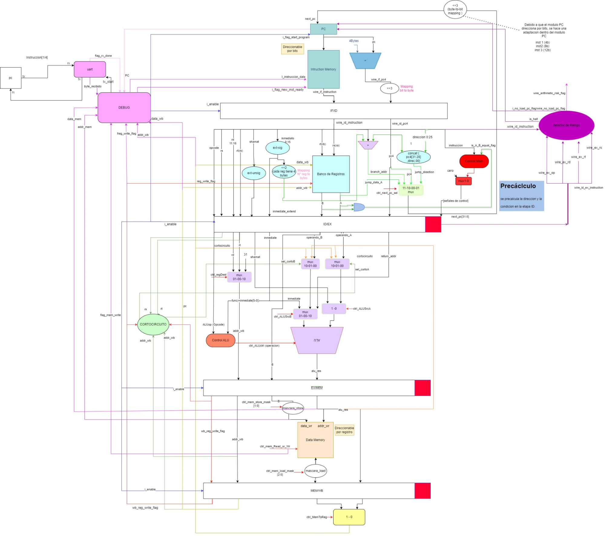
Imágen 0: Diagrama de arquitectura MIPS
Debugger
En primer lugar, comencemos con la Unidad de Debug. Es la encargada de recibir las instrucciones desde la computadora y cargarlas en la memoria de programa, así como indicarle al MIPS si debe ejecutarse en Modo Continuo o Modo Paso a Paso.
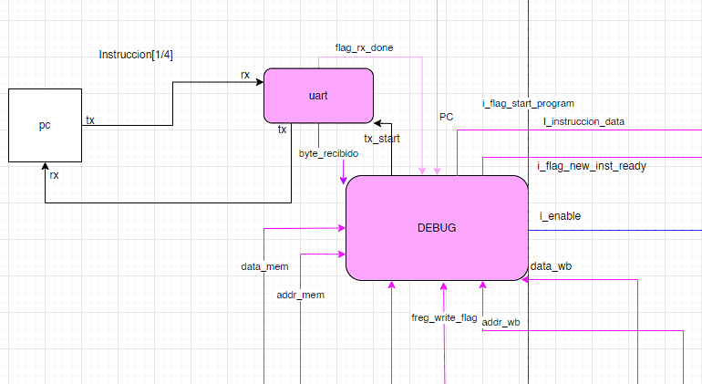
Imágen 1: Unidad de Debug
Como se ve en la Imagen 1, la Unidad de Debug se comunica con la computadora por medio de la interfaz UART, que se encarga de recibir y enviar la información desde y hacia el MIPS.
UART
El módulo UART recibe información de la PC y cuando termina de recibir un dato, notifica a la Unidad de Debug mediante el ‘flag_rx_done’ y la unidad de Debug procesa el ‘byte recibido’ y acciona en base a lo recibido. Los comandos a enviar desde la PC hacia el Debug son los siguientes:
- Comando L: Es un comando “Load” para comenzar a cargar las instrucciones. Al recibir este comando, la Unidad de Debug cambia de estado ‘IDLE’ a ‘RECEIVE INSTRUCTION’ y comienza a recibir las instrucciones una por una. Luego de enviar este comando, la memoria de programa del MIPS queda cargada con las instrucciones en código máquina proporcionadas por el programa ensamblador que se desee cargar
- Comando C: Una vez cargadas las instrucciones, si se envía el comando C (“Continuo”) el programa comienza a ejecutarse en modo Continuo. Una vez finalizado el programa, la Unidad de Debug envía la información requerida a la PC
- Comando S: Una vez cargadas las instrucciones, si se envía el comando S (“Step to Step”) el programa comienza a ejecutarse en modo Paso a Paso. En cada ciclo de Clock ejecutado, la Unidad de Debug envía la información requerida a la PC
- Comando N: Si se está ejecutando el programa en modo Paso a Paso, al enviar el comando N (“Next”) el MIPS ejecuta un ciclo de Clock.
Etapa IF
La etapa IF (Instruction Fetch) es la encargada de ‘sacar’ con cada ciclo de Clock las instrucciones a ejecutar en su output para que avancen hacia la siguiente etapa.
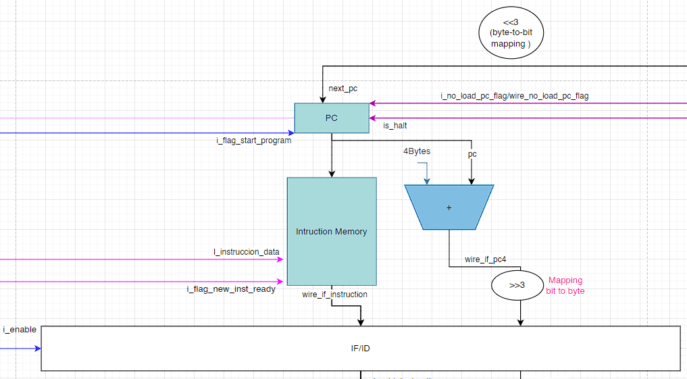
Imagen 2: Etapa IF
A continuación, una descripción de sus inputs y outputs:
Inputs:
- ‘i_flag_new_inst_ready’: Esta flag le indica a la memoria de instrucciones (Instruction Memory) que hay una nueva instrucción para almacenar en memoria. A medida que se va cargando el programa; la Unidad de Debug notifica a la etapa IF la existencia de una nueva instrucción a almacenar mediante esta flag
- ‘i_instruction_data’: Este input contiene la instrucción a almacenar en memoria, que viene desde la Unidad de Debug
- ‘i_flag_start_program’: Esta flag le notifica al módulo PC de la etapa IF que debe comenzar el programa; en otras palabras, que el Program Counter comience a incrementarse a la vez que van saliendo nuevas instrucciones
- ‘next_pc’: Este input contiene el PC que se debe utilizar en la memoria de instrucciones para apuntar a la instrucción correspondiente
- ‘i_no_load_pc_flag’: Esta flag le indica al PC que no debe incrementarse. Viene de la Unidad de Riesgos, y se activa cuando debe haber una burbuja o stall.
- ‘is_halt’: Esta flag le indica al PC que la instrucción que se decodificó es una halt o “instrucción de finalización de programa”. Viene de la Unidad de Riesgos
Outputs:
- ‘wire_if_instruction’: Este output corresponde a la instrucción que avanza hacia la siguiente etapa
- ‘wire_if_pc4’: Este output contiene el valor del “Pc Next”; que corresponde al valor del PC actual sumado 4 bytes. Por ejemplo, si el valor del PC es 4; el valor de wire_if_pc4 será 8.
Etapa ID
En la etapa ID entran en juego varios módulos encargados de realizar distintas cosas. Estos módulos, en síntesis, son la etapa ID propiamente dicha, la Unidad de Control y la Unidad de Detección de Riesgos. Cada Unidad realiza su tarea específica y se comunica con el resto, se comentarán con detalle una por una.
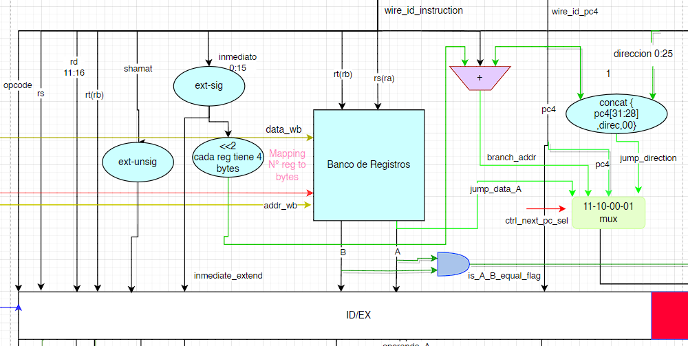
Imágen 3: Etapa ID
La etapa ID es la encargada de decodificar la instrucción proveniente de la etapa IF y ‘descomponerla’ en sus distintos componentes según la instrucción de la que se trate. La información que recibe este módulo es la siguiente
Inputs:
- ‘wire_id_instruction’: Es la instrucción que viene de la etapa IF.
- ‘wire_id_pc4’: Es el “PC + 4” que viene de la etapa IF
- ‘reg_write_flag’: Es una flag que indica si hay o no una escritura en memoria
- ‘data_wb’: Es el valor del dato que va a ser almacenado en la Memoria de Registros, en caso de que haya escritura en memoria (Write Back)
- ‘addr_wb’: Es la dirección de memoria del valor que se almacena en la Memoria de Registros, en caso de que haya escritura en memoria (Write Back)
- ‘ctrl_next_pc_sel’: Esta input proveniente de la Unidad de Control, indica cuál es el valor correspondiente al PC que se ejecuta en el siguiente ciclo de Clock. En otras palabras, actúa como decisor en un multiplexor ‘mux’ que tiene como entradas los valores de los posibles próximos Program Counter. Ya que si se trata de un jump, branch, o simplemente el próximo PC, se debe accionar en base a lo que indique la instrucción que se está ejecutando. Los posibles valores de esta input son:
- 01: El próximo PC será el indicado por ‘jump_direction’
- 00: El próximo PC será el indicado por ‘pc4’
- 10: El próximo PC será el indicado por ‘branch_addr’
- 11: El próximo PC será el indicado por ‘jump_data_A’
Outputs:
- ‘o_rs’: El valor correspondiente a rs indicado en la instrucción.
- ‘o_rd’: El valor correspondiente a rd indicado en la instrucción.
- ‘o_rt’: El valor correspondiente a rt indicado en la instrucción.
- ‘o_op’: El valor correspondiente al opcode indicado en la instrucción.
- ‘o_funct’: El valor correspondiente a funct indicado en la instrucción.
- ‘o_shmt_extend’: El valor correspondiente a shmt indicado en la instrucción, extendido en signo.
- ‘A’: El valor que ‘sale’ de la Memoria de Registros y avanza a la siguiente etapa. Corresponde al valor almacenado en la dirección indicada por rs
- ‘B’: El valor que ‘sale’ de la Memoria de Registros y avanza a la siguiente etapa. Corresponde al valor almacenado en la dirección indicada por rt
- ‘o_next_pc’: El valor del próximo PC. Sale del multiplexor ‘mux’ y actúa como input del módulo PC.
- ‘is_A_B_equal_flag’: Flag que indica si A y B son iguales. Se utiliza particularmente en las instrucciones BNE y BEQ para determinar si hay que realizar un salto.
- ‘o_mem_reg_to_user’: Corresponde a los valores de la Memoria de Registros; se dirige hacia la Unidad de Debug y proporcionan información de la memoria
Siguiendo con los módulos pertenecientes a la etapa ID, se procede a detallar el módulo ‘Control Main’ o Unidad de Control de nuestro MIPS
Unidad de Control
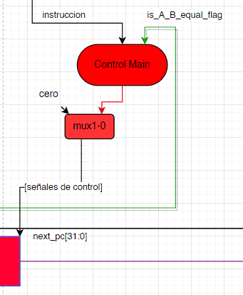
Imagen 4: Unidad de Control
La Unidad de Control es la encargada de enviar las señales de información hacia todo el resto del Pipeline, indicando qué hacer y qué decisión tomar en cada etapa en base a las características de la instrucción. Sus inputs y outputs se describen a continuación
Inputs:
- ‘instruccion’: Es la instrucción proveniente de la etapa IF
- ‘is_A_B_equal_flag’: Es una flag que indica si las salidas de la Memoria de Registros ‘A’ y ‘B’ son iguales
Outputs: Señales de Control
- ‘o_next_pc_select’: Es el selector del próximo PC, que se dirige hacia la entrada del ‘mux’ mencionado anteriormente.
- ‘o_ex_alu_src_a’: Es el selector del input ‘A’ de la ALU en la etapa EX. Decide si el valor de ‘A’ es el operando ‘A’ o el ‘shmt’ de la instrucción
- ‘o_ex_alu_src_b’: Es el selector del input ‘B’ de la ALU en la etapa EX. Decide entre los siguientes valores:
- 00: Operando ‘B’
- 01: El ‘immediate’ de la instrucción
- 10: La dirección de retorno o ‘return address’
- 11: No se utiliza
- ‘o_ex_reg_dest_sel’: Es el selector del valor de la dirección de escritura en memoria ‘addr_wb’ ubicado en la etapa EX. Decide entre los siguientes valores:
- 01: rd
- 00: rt
- 10: GPR 31
- 11: No se usa
- ‘o_mem_write_read_flag’: Es una flag que indica si se escribe o se lee en la Memoria de Registros
- ‘o_mem_load_mask’: Especial para instrucciones LOAD, su valor indica:
- Si la instrucción es LB
- Si la instrucción es LH
- Si la instrucción es LW
- Si la instrucción es LBU
- Si la instrucción es LHU
- Si la instrucción es LBU
- ‘o_mem_store_mask’: Especial para instrucciones STORE, su valor indica:
- Si la instrucción es SB
- Si la instrucción es SH
- Si la instrucción es SW
- ‘o_wb_mem_to_reg_sel’: Selector de la fuente utilizada para la escritura de un registro en la Memoria de Registros, si es la salida de la ALU o la salida de la Memoria de Datos
- ‘o_wb_write_back_flag’: Flag que indica si hay o no escritura en memoria (Write Back)
Para finalizar con los módulos pertenecientes a la etapa ID, a continuación se muestra el Detector de Riesgos y su detallada explicación.
Detector de Riesgos
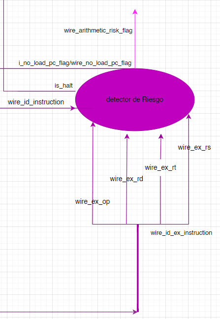
Imagen 5: Detector de Riesgos
El Detector de Riesgos se encarga de detectar los posibles riesgos de datos y estructurales que se puedan presentar en la ejecución del programa. En síntesis, está comparando constantemente las instrucciones que van a ingresar en la etapa EX y en la etapa ID, y de esta manera dispara flags que advierten al resto de los módulos para accionar de determinada manera. Sus inputs y outputs son:
Inputs
- ‘wire_id_ex_instruction’: La instrucción que va a ingresar en la etapa EX en el próximo ciclo de Clock. Viene del latch ID/EX
- ‘wire_id_instruction’: La instrucción de la etapa ID
Comparando estas dos inputs, el Detector de Riesgos notifica si hay un riesgo por el cual tomar cierta decisión. De esta manera, tiene como salidas:
Outputs
- ‘wire_arithmetic_risk_flag’: Flag para indicar si hay un riesgo aritmético
- ‘wire_no_load_pc_flag’: Flag para indicar si hay un riesgo en una operación LOAD. De ser así, no debe incrementarse el PC
- ‘is_halt’: Flag para indicar que se decodificó una instrucción HALT. Por lo tanto, debe finalizar el programa
Etapa EX
En el MIPS, las operaciones aritméticas se llevan a cabo en la etapa EX. En la implementación, dicha etapa está constituida principalmente por la ALU, y varios multiplexores controlados por la Unidad de Control.
Además, en esta etapa se implementó la Unidad de Cortocircuito, capaz de realizar tres tipos de cortocircuitos:
- Un cortocircuito desde la salida de la ALU (con el resultado de la alu) hacia la entrada de la ALU.
- Un cortocircuito con la dirección de escritura en memoria que va desde el output de la etapa MEM hacia la Unidad de Cortocircuito
- Un cortocircuito con la dirección de escritura en memoria que va desde el output del latch MEM/WB hacia la Unidad de Cortocircuito
Primero, se muestra la siguiente imagen correspondiente a la etapa EX y se desarrollará la explicación de cómo se ejecutan las instrucciones. Luego, mostraremos la Unidad de Cortocircuito ‘anexada’ en esta etapa y cómo se comunican entre sí
Imagen 6: Etapa EX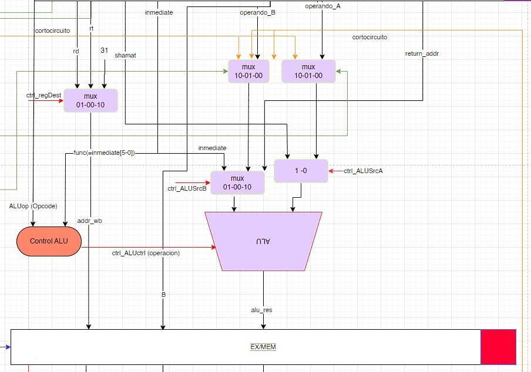
Procedemos a detallar cada input y output de la etapa EX y detallar sus funcionalidades:
Inputs:
- ‘i_cc_data_wb’: Data ‘cortocircuitada’ desde la etapa Write Back. En caso de que sea necesario cortocircuitar este dato, estará disponible inmediatamente
- ‘i_op_a’: Operando A.
- ‘i_op_b’: Operando B.
- ‘i_inmediate’: El dato ‘immediate’ de la instrucción para instrucciones inmediatas.
- ‘i_return_addr’: La dirección de retorno, en caso de que se necesite
- ‘i_rt’: ‘rt’ de la instrucción. Entra a un multiplexor junto a rd y el GPR 31 que en conjunto son las posibles direcciones para el Write Back.
- ‘i_rd’: ‘rd’ de la instrucción. Entra a un multiplexor junto a rt y el GPR 31 que en conjunto son las posibles direcciones para el Write Back.
- ‘i_opcode’: El opcode de la instrucción. Con este dato, el módulo Control Alu sabe qué operación ejecutar en la ALU.
- ‘i_sel_cc_b’: Selector de cortocircuito en el multiplexor previo a la entrada del operando B. El mismo selecciona entre los siguientes tres inputs:
- El operando B que viene desde la etapa ID
- El cortocircuito que viene de la salida de la ALU
- El cortocircuito que viene desde la salida del Writeback
- ‘i_sel_cc_a’: Selector de cortocircuito en el multiplexor previo a la entrada del operando A. Ídem al caso anterior.
- ‘i_ctrl_Alu_src_a’: Selector del operando A que entra a la ALU. Se decide entre:
- El dato del multiplexor que es salida de ‘i_sel_cc_b’
- El shmt de la instrucción
- ‘i_ctrl_Alu_src_b’: Selector del operando B que entra a la ALU. Los posibles valores son:
- El ‘return address’ (dirección de retorno)
- El dato del multiplexor que es salida de ‘i_sel_cc_b’
- El ‘immediate’
- ‘i_alu_result_from_MEM’: El resultado de la ALU ‘cortocircuitado’, extraído de la etapa MEM
Outputs:
- ‘B’: El operando B
- ‘alu_res’: El resultado de la ALU
- ‘addr_wb’: La dirección para escribir en memoria, en caso de que haya un Write Back.
Ahora, continuemos con la Unidad de Corto Circuito, que también se encuentra en la etapa EX y se comunica con los módulos internos de dicha etapa.
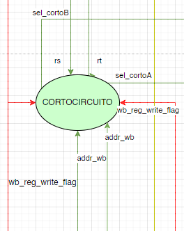
Imagen 7: Unidad de Corto Circuito
La unidad de Corto Circuito se encarga de ‘cortocircuitar’ ciertos datos en caso de que se necesite para evitar ciertos riesgos. En síntesis, evalúa los riesgos de las instrucciones presentes en las etapas EX y MEM, junto con ciertas flags que recibe de la Unidad de Control, para poder decidir cuáles son los datos que ingresan al multiplexor de la ALU en base a la situación que se encuentre en el MIPS.
A continuación, la descripción de sus componentes para mejor explicabilidad del módulo:
Inputs:
- ‘i_ex_mem_reg_write_flag’: Flag extraída del latch EX_MEM. Indica si se realizará una escritura en memoria
- ‘i_mem_wb_reg_write_flag’: Flag extraída del latch MEM_WB. Indica si se realizará una escritura en memoria
- ‘i_rs’: El registro rs extraído del latch ID_EX
- ‘i_rt’: El registro rt extraído del latch ID_EX
- ‘i_ex_mem_write_addr’: Registro extraído del latch EX_MEM con la dirección de escritura en memoria ‘addr_wr’
- ‘i_mem_wb_write_addr’: Registro extraído del latch MEM_WB con la dirección de escritura en memoria ‘addr_wr’
Outputs:
- ‘sel_corto_A’: Selector para el multiplexor del cortocircuito del operando A. Sus posibles salidas son:
- 00: No hay cortocircuito
- 01: Se realiza cortocircuito con el resultado de la ALU
- 10: Se realiza cortocircuito con el dato del Write Back
- ‘sel_corto_B’: Selector para el multiplexor del cortocircuito del operando A. Sus posibles salidas son:
- 00: No hay cortocircuito
- 01: Se realiza cortocircuito con el resultado de la ALU
- 10: Se realiza cortocircuito con el dato del Write Back
Con estos datos a su entrada, la Unidad de Cortocircuito es capaz de comparar sus inputs y en base a eso identificar si hay necesidad de realizar un cortocircuito, y pone a su salida el valor que corresponda.
Etapa MEM
Imagen 8: Etapa MEM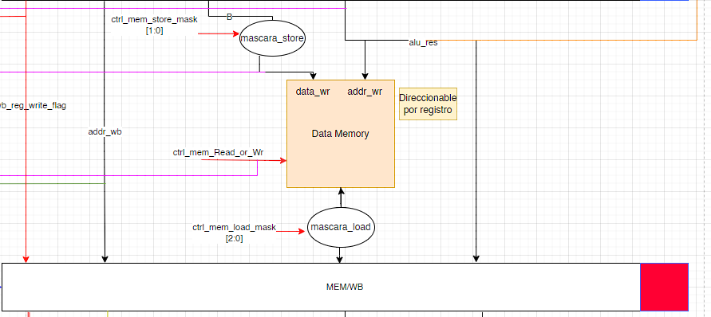
La etapa MEM o Memory, es la encargada de realizar las operaciones vinculadas a la Memoria de Datos. Ya sea almacenar un dato desde la memoria de registros hacia la memoria de datos (STORE), o cargar un dato en la memoria de registros desde la memoria de datos (LOAD)
La Unidad de Control le notifica por medio de sus flags lo que debe hacer. Ya sea escribir o leer en memoria si la instrucción lo requiere. A continuación, describimos sus características para mayor entendimiento del módulo
Inputs
- ‘ctrl_mem_read_or_wr’: Flag proveniente de la Unidad de Control. Mediante esta flag; se escribe o se lee en la memoria.
- ‘i_data_mem’: La entrada por la cual viene el dato a escribir en memoria.
- ‘i_addr_mem’: La entrada por la cual viene la dirección a escribir en memoria.
- ‘ctrl_mem_store_mask’: Máscara para el dato que se almacena en la memoria de datos. Sus valores distinguen en si se almacena un BYTE, un WORD o un HALF WORD.
- ‘ctrl_mem_load_mask’: Máscara para el dato que se carga en memoria de reigstros. Sus valores distinguen en si se carga un BYTE, un WORD o un HALF WORD.
Outputs
- ‘o_data_mem’: El dato que sale de la memoria de datos.
- ‘o_data_mem_to_user’: En este output va todo el contenido de la memoria hacia la Unidad de Debug para luego ser enviada hacia la PC.
Etapa Write Back
Finalmente, llegamos a la última etapa del Pipeline; la de Write Back. Esta etapa es la encargada simplemente de enviar el dato que se desea escribir en el banco de registros; en caso de que la instrucción lo requiera. Mediante un multiplexor y con la ayuda de la Unidad de Control, envía el dato correspondiente hacia la etapa ID. Describimos sus características:
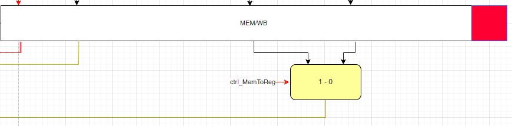
Imagen 9: Etapa Write Back
Inputs:
- ‘i_data_mem’: Esta entrada contiene el valor que viene desde la memoria de datos.
- ‘i_alu_result’: Esta entrada contiene el valor del resultado de la ALU.
- ‘i_ctrl_WB_memToReg_flag’: Esta flag que viene desde la Unidad de Control, le indica al multiplexor cual de sus entradas viajará desde el Write Back hacia la Memoria de Registros en la etapa ID. Sus posibilidades son:
- 1: Se escribe el valor ‘i_data_mem’
- 0: Se escribe el valor ‘i_alu_result’
outputs:
- ‘o_data_to_wb’: Cable de 32 bits con el contenido del dato a escribir.
- ‘o_addr_wb’: Cable de 32 bits con la dirección del registro a escribir.
TIMER:
La frecuencia más alta que se alcanzó sin que genere errores es a 90,909 MHz.
Por arriba de la misma existen violaciones de TNS y WNS en el reporte de timing.
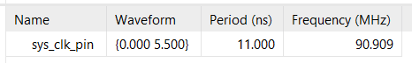
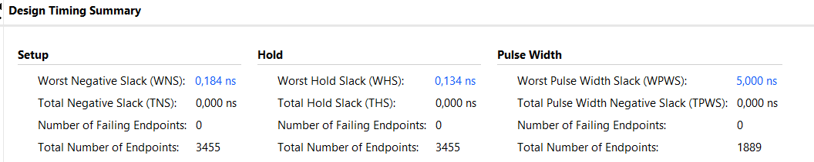
Cuando WNS y TNS se marcan en rojo con valores negativos indica que el diseño no ha logrado cumplir con los requisitos de temporización establecidos, lo que significa que hay violaciones de temporización. Una violación de temporización ocurre cuando la ruta más lenta en el diseño no cumple con los requisitos de temporización impuestos, lo que podría resultar en un funcionamiento incorrecto o inestable del hardware.
Requerimientos
Hardware: FPGA BASYS 3.
Frecuencia del TIMER: 90.909 MHz (máxima).
Sistema Operativo: Windows 11.
Software Sintetizador: Xilinx Vivado 2022.2.
Repositorio: GITHUB
Ejecución Nominal
Para cargar un programa en el Pipeline y ejecutarlo, se diseñó un compilador en Python. Este compilador lo que hace es recibir un programa en lenguaje ensamblador y devolver las instrucciones en lenguaje máquina (hexadecimal) listas para ser cargadas en la memoria de programa mediante la Unidad de Debug
El procedimiento para utilizar el compilador es el siguiente:
- Se debe escribir el programa a ejecutar en lenguaje ensamblador en el archivo ‘assembler1.txt’ .
- Ejecutar el programa ‘compiler.py’ proporcionado en el repositorio.
- Una vez finalizada la ejecución del compilador, se habrá proporcionado un archivo llamado ‘instruction.txt’ con las instrucciones en hexadecimal una debajo de la otra listas para ser cargadas.
- Conecte la placa con un cable micro USB al ordenador.
- Resetee la placa con el botón señalado en la imagen a continuación.
- Ejecutar el programa ‘program.py’ y de esta manera poder cargar las instrucciones previamente compiladas por ‘compiler.py’. Mediante este programa se le envían los comandos a la Unidad de Debug del MIPS.
Cabe aclarar que es importante que el archivo ‘program.py’ esté bien configurado en la línea 32 con el correcto puerto ‘COM’ donde se encuentra conectada la placa. También, debe establecerse correctamente el ‘baud rate’ de la transmisión en 9600.
Para que los registros y estados del procesador se encuentren inicializados correctamente se debe seleccionar el botón reset, luego de haber conectado la placa y antes de ejecutar el programa ‘program.py’.
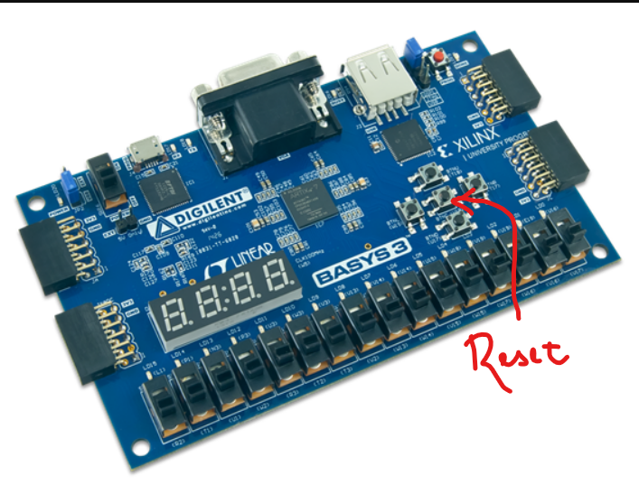
BIBLIOGRAFÍA